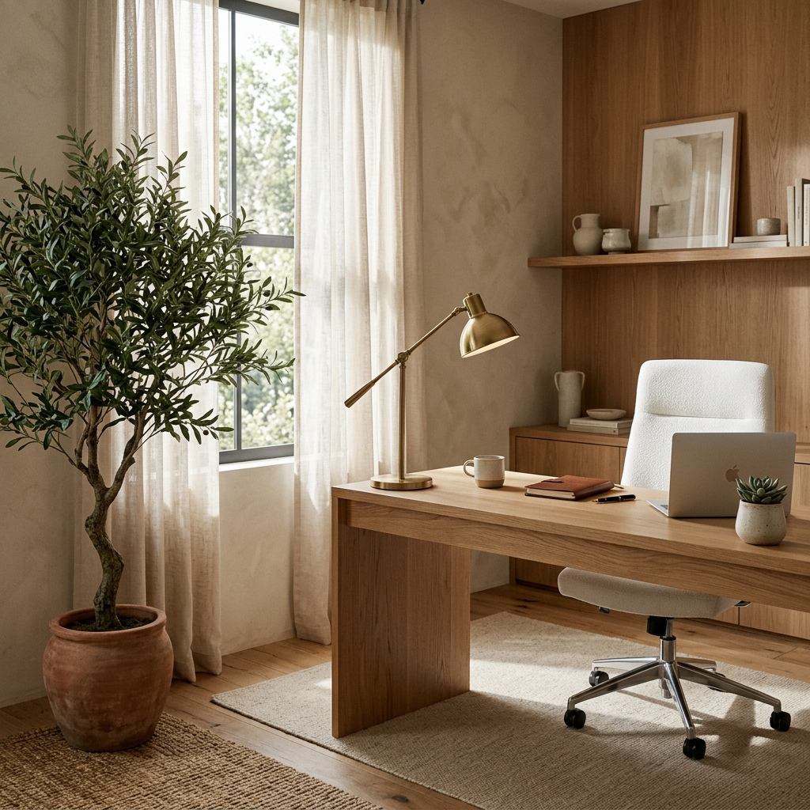
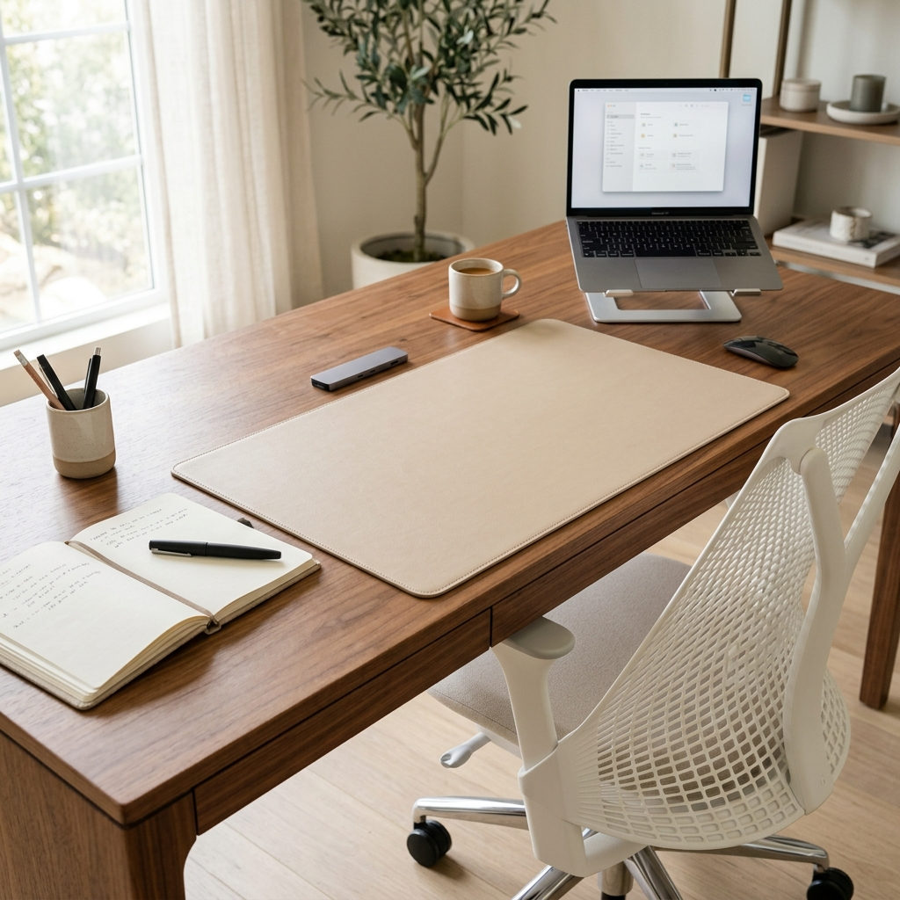
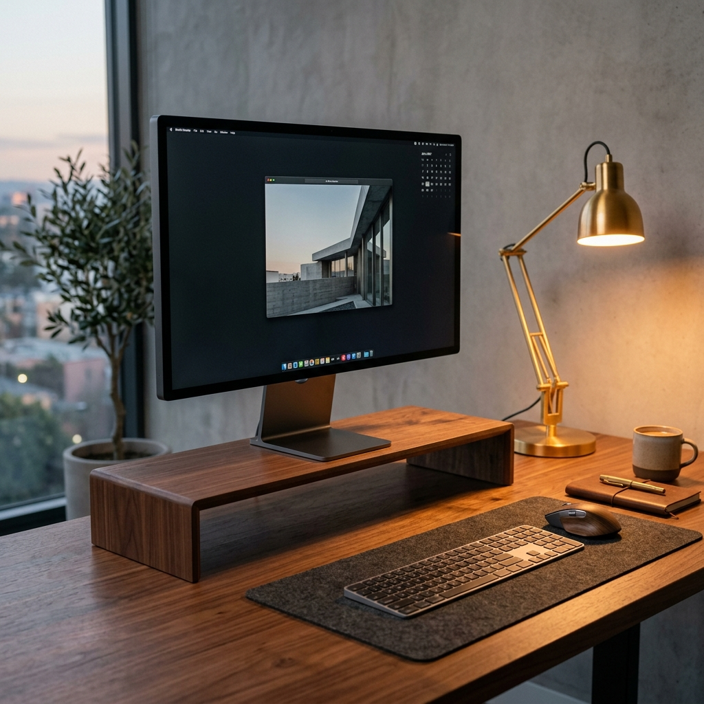
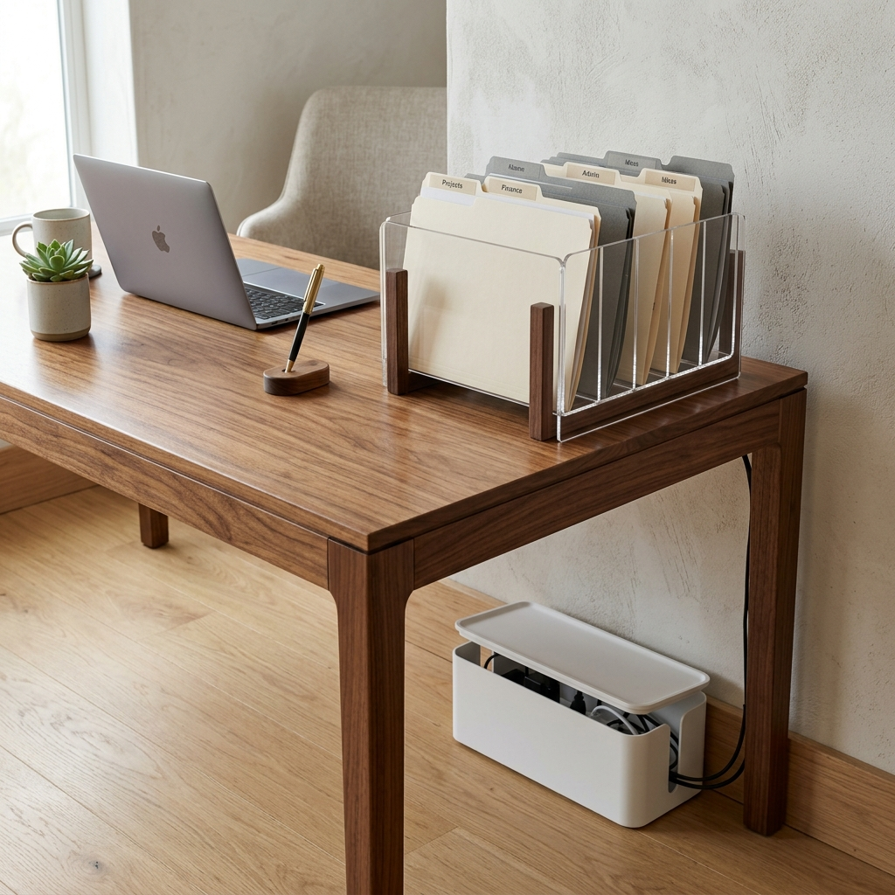
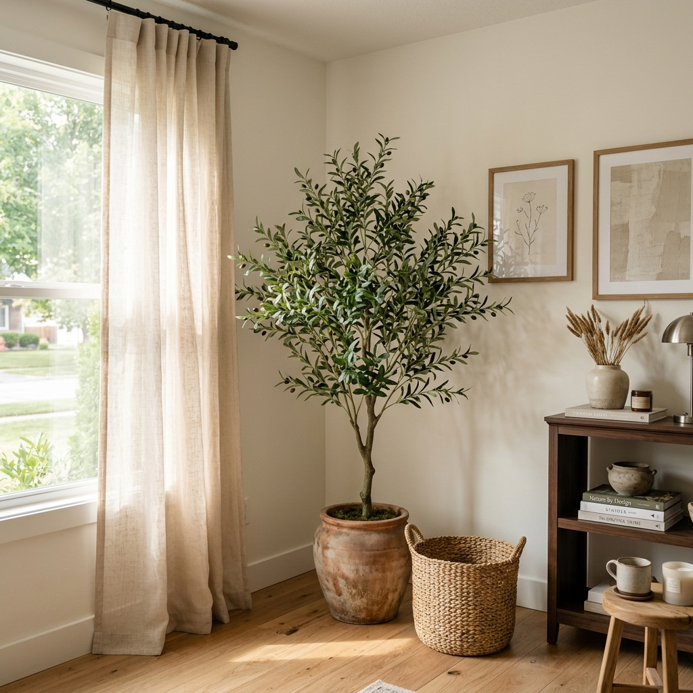

The Ultimate Minimalist Home Office Setup for Deep Work
Discover how to set up a chic, minimalist home office designed for deep work and maximum productivity. A room setup guide for a calm, aesthetic workspace.
Let's be honest: trying to do deep, focused work at a kitchen table covered in mail, or sitting on a sofa while balancing a hot laptop on your knees, is a recipe for burnout.
When you work from home, your environment directly dictates your focus. If your workspace is chaotic, cluttered, and uninspiring, your mind will feel the exact same way. But when you step into a beautifully curated, minimalist home office, something shifts. The visual quietness of the room allows your brain to finally focus on the task at hand.
A chic, minimalist home office isn't just about making things look pretty for a Zoom background (although that's a nice bonus). It is about intentionally designing a room setup that removes distractions, supports your posture, and makes you actually want to start working in the morning.
Here is the ultimate guide to setting up a high-end, minimalist home office designed for deep work.

Step 1: The Foundation (Desk & Chair)
The absolute core of any home office setup is where you sit and what you work on. In a minimalist space, you want to avoid bulky, black corporate furniture.
Instead of a massive, heavy executive desk with a dozen drawers you will never use, opt for a clean, solid wood writing desk. A warm-toned wood introduces natural texture into the room and feels incredibly grounding.

- The Desk: Solid Wood Writing Desk (Warm Tone)
- The Chair: Ergonomic Minimalist Office Chair (White)
To protect your beautiful wood desk and give your mouse a smooth surface, lay down a large desk pad. A faux leather pad in a neutral beige or soft tan color instantly elevates the look of the desk while keeping your laptop secure.
Recommended: Large Faux Leather Desk Pad (Neutral)
Step 2: The Tech Zone (Elevation & Lighting)
Looking down at a laptop screen all day will destroy your neck and posture. The easiest ergonomic upgrade you can make in your room setup is elevating your screen. A sleek wooden monitor riser stand not only brings your screen to eye level, but it also creates a hidden cubby underneath to slide your keyboard away when the workday is done.

Recommended: Monitor Riser Stand Wood
Lighting is the second most crucial element for productivity. You need layered lighting. Relying solely on harsh overhead room lights will cause eye strain by 3 PM. Add a dedicated desk lamp with adjustable warm light. A slim, architectural brass desk lamp acts as both a functional light source and a beautiful piece of minimalist jewelry for your desk.
Recommended: Adjustable Warm Light Desk Lamp (Brass)
Step 3: Conquering the Clutter (Organization)
Minimalism is impossible if you have charging cables, hard drives, and random papers scattered across your desk. Visual clutter is the enemy of deep work.
The first thing you must tackle is cable management. A simple, aesthetically pleasing cable management box placed on the floor or under the desk hides the ugly power strip and the tangled mess of black wires. It instantly cleans up the visual footprint of the room.

Recommended: Cable Management Box Minimalist
For the papers and notebooks you actually need to access daily, skip the ugly plastic filing cabinets. Use a chic acrylic or natural wood file organizer sitting neatly on the corner of your desk. It forces you to keep only what is essential and looks incredibly high-end.
Recommended: Aesthetic Acrylic or Wood File Organizer
Step 4: Breathing Life into the Room (Decor & Softening)
An office should not feel like a sterile cubicle. Once the functional foundation is set, you need to soften the room to make it inviting.
Nothing breathes life into a workspace quite like greenery. If you don't have a green thumb (or your office lacks natural sunlight), a large, high-quality faux olive tree placed in the corner of the room adds crucial height and an organic, calming element to the space.

Recommended: Faux Olive Tree Large Indoor
Next, address the windows. Heavy, dark drapes can make an office feel like a cave. Swap them out for light, airy linen sheer curtains. They diffuse the harsh sunlight, reducing glare on your monitor, while still filling the room with a soft, glowing, natural light.
Recommended: Linen Sheer Curtains for Office
Finally, even the functional items should be beautiful. Don't ruin your chic aesthetic with a cheap plastic trash can. A neutral woven wastebasket tucked discreetly under the desk adds one last touch of natural texture.
Recommended: Neutral Woven Wastebasket
Final Thoughts: Curating Your Focus
Setting up a minimalist home office is not about getting rid of everything you own; it is about keeping only the things that serve a purpose or bring you peace.
When your desk is clear, your cables are hidden, and you are surrounded by warm woods, soft linens, and natural light, your mind doesn't have to spend energy filtering out the chaos. Instead, you can sit down, take a deep breath, and do your best work.